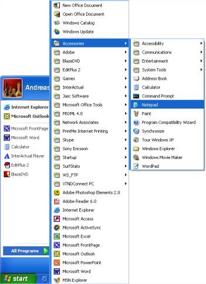

In dieser ersten Lektion möchten wir Ihnen einen kurzen Überblick über die Werkzeuge geben, welche zum Erstellen Ihrer Homepage nötig sind.
Höchstwahrscheinlich haben Sie schon, was Sie brauchen.
Sie haben einen Browser. Ein Browser ist das Programm, mit dem man Internetseiten öffnen und ansehen kann. Gerade jetzt schauen Sie sich diese Seite in Ihrem Browser an.
Es ist nicht wichtig, welchen Browser sie benutzen. Der derzeit bekannteste ist sicherlich der Internet Explorer. Aber es gibt auch andere, wie z.B. Opera oder Mozilla Firefox und alle sind gleichermaßen für unsere Zwecke geeignet.
Sicherlich haben Sie schon einmal von Programmen wie Microsoft FrontPage, Macromedia Dreamweaver oder auch Microsoft Word gehört, bzw. auch schon damit gearbeitet. Diese Programme können Webseiten für Sie erstellen oder behaupten dies zumindest. Bitte vergessen Sie diese Programme für eine Weile. Sie sind überhaupt nicht hilfreich, wenn es darum geht, den Quelltext von Webseiten selbst zu erstellen.
Stattdessen brauchen Sie nur einen einfachen Texteditor. Wenn Sie Windows nutzen, arbeiten Sie einfach mit dem “Notepad”, welches im Startmenü unter Programme → Zubehör zu finden ist. In neueren deutschen Windows-Versionen heißt Notepad einfach nur Editor.

Wenn Sie kein Windowsnutzer sind, können Sie einen vergleichbaren Texteditor benutzen, z.B. Pico unter Linux oder TextEdit auf dem Mac.
Notepad ist zwar ein sehr einfacher Texteditor, aber toll um HTML zu erlernen, da er “die Finger vom Geschriebenen läßt”. Sie haben die volle Kontrolle über Ihren Quellcode.
Das Problem vieler Programme zum Erstellen von Webseiten ist, dass man nur aus mehreren Standardfunktionen wählen kann. Dies ist ein Nachteil, da alles in diese Vorgaben passen muss. Deswegen können diese Programme auch oft nicht die Seiten nach Ihren Wünschen erstellen. Oder – was meist noch ärgerlicher ist – sie nehmen Änderungen am von Ihnen handgeschriebenen Quelltext vor. Mit Notepad oder anderen Texteditoren, müssen Sie nur sich selbst für Erfolge oder Mißerfolge danken.
Ein Browser und Notepad (oder ein vergleichbarer Texteditor) sind alles was Sie benötigen um mit diesem Tutorial Ihre eigene Homepage zu erstellen.
Sie müssen nicht mit dem Internet verbunden sein – weder beim lesen des Tutorials, noch beim Erstellen Ihrer Webseiten.
Wenn Sie beim lesen nicht online sein möchten, können Sie sich entweder die Seiten ausdrucken oder die Verbindung beim Lesen trennen. Ihre Webseite können Sie auf der Festplatte Ihres Computers entwickeln und diese nach Fertigstellung ins Internet hochladen.
In der nächsten Lektion können Sie zuerst noch einiges über HTML lesen, bevor es in Lektion 3 dann richtig losgeht.